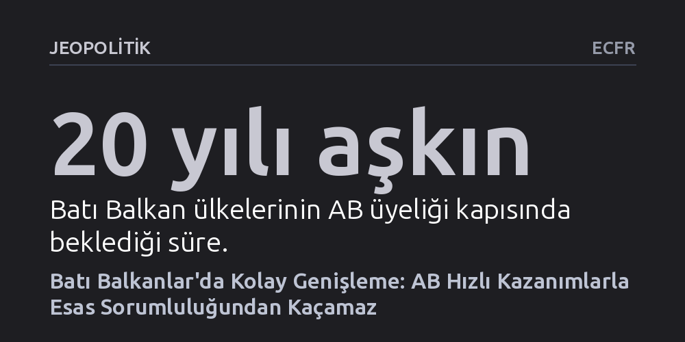

JEOPOLITIK · ECFR · 2026-09-12
AB, Karadağ ve Arnavutluk ile hızlı zaferler peşinde koşarken Batı Balkanlar'daki temel uzlaşma ve sınır anlaşmazlıklarını çözme sorumluluğunu ihmal ediyor. Birlik, kolay kazanımlara odaklanmak yerine bölgenin kronik krizlerini aşacak kademeli entegrasyonu ve kararlı diplomasiyi canlandırmalıdır.
Genişleme sürecinin salt liyakate dayalı bir reform mekanizması olmaktan çıkıp, zorlu krizlerden kaçarak kolay kazanımları önceleyen jeopolitik bir pragmatizme dönüştüğünü gösterir.

Avrupa Komisyonu, eylül ayı sonunda genişleme politikasına dair kapsamlı bir yol haritası sunmaya hazırlanıyor. Bu belgenin, uzun süredir bekleme odasında tutulan Karadağ ve Arnavutluk'un üyelik müzakerelerini yakın gelecekte tamamlayabileceğini teyit etmesi bekleniyor. Yirmi yılı aşkın süredir AB kapısında bekleyen bu ülkelerin ilerleme kaydetmesi elbette kutlanması gereken bir gelişme. Hatta Brüksel koridorlarında Karadağ’ın birliğe katılım maliyetinin her bir AB vatandaşı için yılda sadece bir fincan kahve parasına denk geldiği vurgulanıyor.
Ancak bu iki ülkenin öne çıkması, sergiledikleri reform kararlılığının yanı sıra çok kritik bir yapısal avantaja dayanıyor: Ne Karadağ’ın ne de Arnavutluk’un komşularıyla aşılması güç sınır uyuşmazlıkları ya da geçmişten devralınan ağır hesaplaşmaları bulunuyor. Brüksel, bölgesel krizleri çözmek gibi çetin bir yükün altına girmek yerine, sorunsuz ve küçük adayları içeri alarak genişleme sürecinin işlediği izlenimini yaratmayı, yani jeopolitik açıdan en zahmetsiz kazanımlara yönelmeyi tercih ediyor.
1990'lardaki Yugoslavya savaşlarının ardından AB’nin benimsediği Batı Balkanlar stratejisi oldukça yalın bir mantığa dayanıyordu: Bölge ülkelerinin kendi aralarındaki uzlaşma ve iş birliği, Avrupa ile bütünleşmenin ön şartı olacaktı. Ancak aradan geçen çeyrek asırda bu hedefin çok uzağında kalındı. Süreç boyunca sadece tek bir ülke, Hırvatistan tam üye olabildi; geri kalan adaylar ise hem yerel yönetimlerin isteksizliği hem de AB içerisindeki iç tıkanıklıklar nedeniyle derin bir durgunluğa sürüklendi.
Bu durağanlık, 2022'de Rusya’nın Ukrayna’yı işgaliyle aniden bozuldu. Brüksel, kıtada gri bölgeler bırakmanın büyük güvenlik açıkları yaratacağını fark ederek Ukrayna ve Moldova’ya hızla adaylık statüsü verdi. Bu jeopolitik uyanış, Balkanlar dosyasını da yeniden canlandırdı. Ne var ki yeni ivmenin arkasındaki itici güç, geçmişteki bölgesel barış ve uzlaşma idealinden oldukça farklı bir zeminde duruyor; amaç artık ortak bir tehdit karşısında Avrupa savunmasını güçlendirmekten ibaret.
Genişleme sürecinde en az engele sahip ülkelere odaklanmak dönemsel jeopolitik hedeflere uygun düşse de Balkanlar'ın düğüm noktalarını ortadan kaldırmıyor. Kosova, çözümsüz kalan statü ve tanınma sorunları yüzünden tıkanmış durumda; Bosna-Hersek, uluslararası toplumun dayattığı işlevsiz bir anayasal yapının altında eziliyor; Kuzey Makedonya ise AB üyesi komşularının ikili engellemelerini aşamıyor. Kolay adaylar içeri alınırken bölgenin asıl kırılma hatları sahipsiz kalıyor.
Bölgenin geçmişiyle yüzleşemediğinin en çarpıcı ve sarsıcı örneği, Bosnalı Sırp savaş suçlusu Ratko Mladic’in cenazesinde yaşandı. Sırbistan yönetiminden üst düzey yetkililerin bu anmaya katılması, yalnızca bölge genelinde ve Brüksel'de değil, vicdan sahibi çok sayıda Sırp vatandaşı arasında da derin bir infial yarattı. Bu durum, savaşı yaşamış kuşaklar yaşlanırken, AB sahici bir dönüşüm ve uzlaşma dayatmadığı müddetçe milliyetçi kutuplaşmanın her an yeniden alevlenebileceğini açıkça kanıtlıyor.
Avrupa Birliği'nin bu kısırdöngüyü kırması, 'ya hep ya hiç' anlayışına dayanan geleneksel katılım mekanizmasını dönüştürmesine bağlı. Komisyon'un hazırladığı kademeli entegrasyon önerisi, aday ülkelerin tam üyelik tamamlanmadan önce AB iç pazarı gibi belirli stratejik alanlara aşamalı dahil edilmesini sağlamalıdır. Böylesi esnek bir model, reform yapan ülkelere hızlı kazanımlar sunarken AB’ye de hukukun üstünlüğü ve demokratik standartlar konusunda daha samimi ve yaptırım gücü yüksek bir şartlılık uygulama imkânı tanıyacaktır.
Bununla birlikte Brüksel, bölgenin düğümlerini çözecek diplomatik süreçleri de kararlılıkla yeniden canlandırmak zorundadır. Sırbistan-Kosova diyaloğu yoğunlaştırılmalı, Bosna-Hersek'in devlet yapısındaki kilitlenmeler aşılmalı ve Kuzey Makedonya üzerindeki ikili vetolar temizlenmelidir. Aksi takdirde genişleme politikası, bölgede çok sevilen bir çizgi romandaki 'Zengin ve güzel olmak, fakir ve çirkin olmaktan çok daha iyidir' sözünde özetlenen yüzeysel bir pragmatizme indirgenmiş olacak ve AB kendi tarihsel sorumluluğundan vazgeçmiş sayılacaktır.